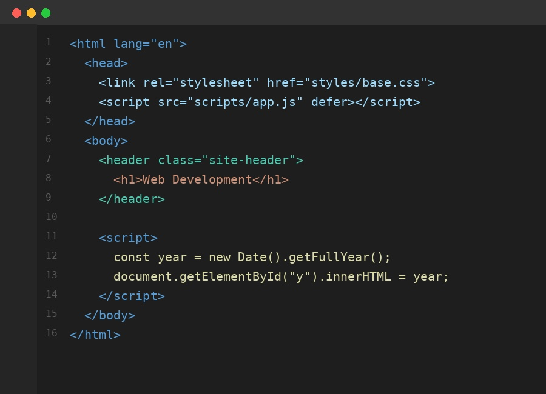

Jason Ntuuwa
About Me
My name is Joel Ntuuwa, and I was born in Uganda. I am currently studying at BYU-Pathway Worldwide, where I am building skills in web development, Python programming, and business communication. I enjoy learning new technologies, creating music in FL Studio, and watching soccer. In my free time, I like studying personal development and finding ways to improve my communication and writing skills. I look forward to continuing to grow both personally and professionally as I work toward a career in software development.
Kampala, Uganda
Uganda is a landlocked country in East Africa, often called the "Pearl of Africa" for its lush landscapes and biodiversity. It is home to part of Lake Victoria, the source of the Nile River, and a wide variety of wildlife, including mountain gorillas found in its national parks.
Web Dev Resources
